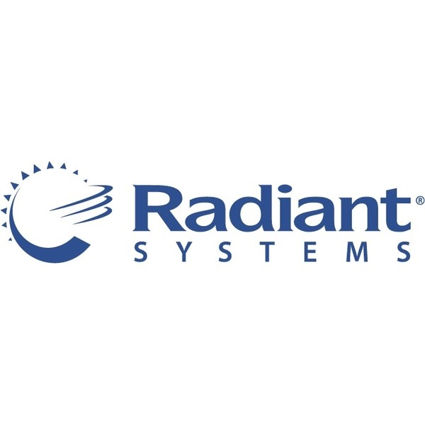
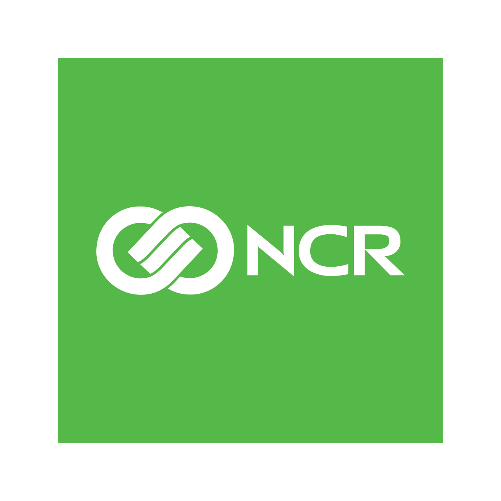
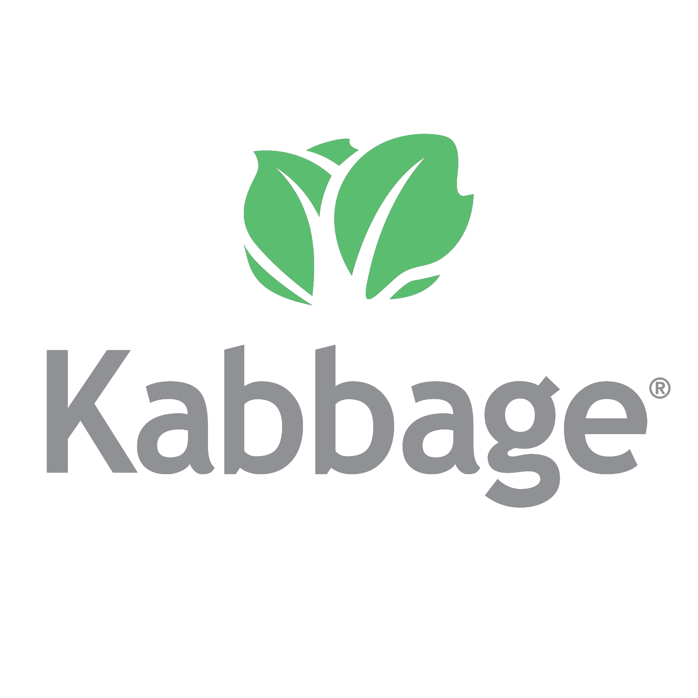

About
{
name: "Patrick Watson",
about: "I'm an Information Security leader specializing in Cloud security, building security programs for startups, and electronic payment systems.",
work: "American Express",
speaking engagements: [ "Black Hat USA", "DEFCON Skytalks", "BSidesLV", "NCR Innovation Conference 2017" ],
interests: [ "Programming", "Security", "Electronic Payments", "Embedded Systems", "Video Games", "Reading" ],
social: [ "LinkedIn", "Facebook", "Twitter", "GitHub" ]
}

 
2004-2011, 2011-2018
In early 2004, Patrick joined Radiant Systems' Epsilon product development team, creating middleware applications that process electronic tenders, connecting points of sale to a variety of payment processing hosts. Patrick implemented several new host interfaces, primarily for the Petroleum and Convenience Retail (PCR) market. He also worked to institute security improvements to bring Epsilon into compliance with Visa’s PABP/CISP standard.
In 2011 at about the same time Radiant Systems was acquired by NCR, Patrick began acting the security architect for the PCR division of NCR, including the Epsilon, Sigma, and RPOS products. In this capacity, he was responsible for ensuring that these products were implemented in compliance with PA-DSS and remediating security issues. At the same time, Patrick took over leadership of the Epsilon Continuous Improvement team, ensuring that defects from over 150 payment host interfaces were quickly resolved.
In 2014, he and Nir Valtman started NCR's company-wide Application Security team. As an Application Security Architect, Patrick was reposible for increasing the security maturity primarily within the PCR and Payments industries. This included creating a S-SDLC, driving adoption of security tooling, and maintaining compliance with security and privacy regulations. In 2018, Patrick's responsibilities expanded to include ODSP, then NCR's cloud computing platform.


2018-2020, 2020+
Patrick joined Kabbage as a Security and Privacy Architect in late 2018, just in time to help design the security and PCI DSS compliance program supporting their new Kabbage Payments service. Kabbage Payments enables very small merchants to accept credit and debit card payments using an intuitive "Pay Link" or detail invoicing system. Patrick then spent 2019 putting together Kabbage's first formal Information Security Program, including a robust SIEM and 24/7/365 SOC, surprisingly effective phishing training program, an internal bug bounty program, adoption of HashiCorp Vault, a data privacy program (including CCPA compliance), and formal adoption of Kabbage's first Information Security Policy and supporting standards.
Unfortunately, Kabbage's customer base was hit extrodinarily hard by the COVID pandemic and associated quarantines. Kabbage pivoted to focus on assisting their customers with applying to the US Small Business Administration (SBA) Paycheck Protection Program. In the mean time, Patrick and other high-level Kabbage leaders were secretly working on a parallel project: acquisition by American Express. Patrick supported American Express' due dillegence efforts by providing expertise and evidence including generating Kabbage's software bill of materials, technical architectures, policy and procedural documentation, and answering information security questions of all sorts.
In October of 2020, this work finally paid off: Kabbage became part of the American Express Global Commerical Services organization. But the challenge had just begun: Kabbage was used to being a nimble FinTech startup, not a multi-national highly-regulated bank. For the next 2 years, Patrick lead efforts to integrate Kabbage and American Express' Information Security programs. This involved uplifts on both sides: Kabbage's mature deployments within AWS provided American Express a foothold in Public Cloud, and American Express' vast resources provided access to tooling Kabbage could have never afforded on it's own.